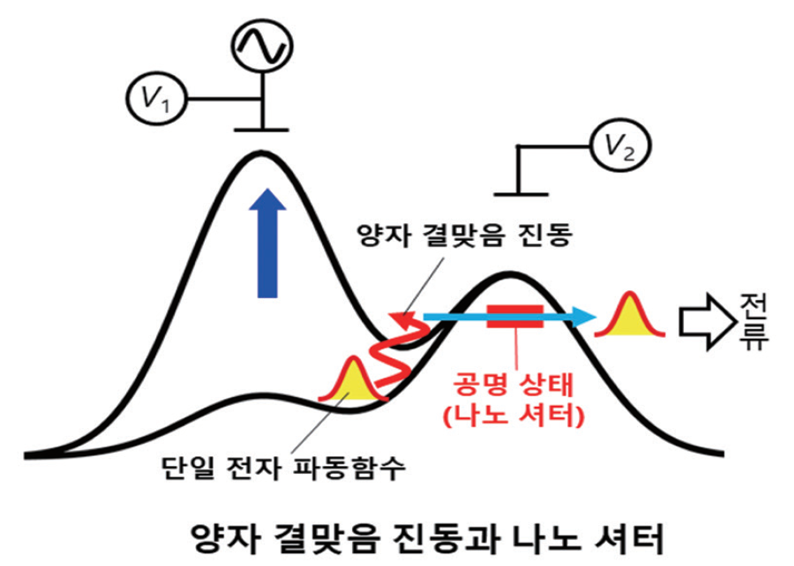
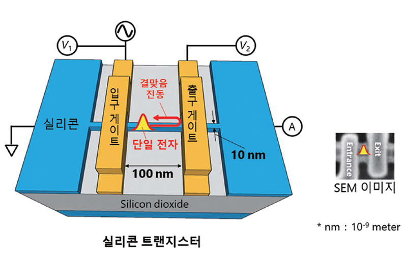

KAIST Top 10
KAIST Top 10
KAIST RESEARCH ACHIEVEMENTS
Ultrafast Quantum Motion in a Nanoscale Trap Detected
Physics Heung-Sun Sim
Summary
Detecting picosecond dynamics of electrons in an electronic nano-device has been considered impossible, since the sub-terahertz scale is far beyond the latest bandwidth measurement tools. KAIST researchers have developed a new protocol for measuring ultrafast electronic dynamics in an effective time-resolved fashion of picosecond resolution, utilizing a quantum-mechanical resonant state. The coupling between the electron dynamics and the resonant state is switched on and off at a picosecond so that information on the dynamics is read out on the electric current being generated when the coupling is switched on. Using the protocol, electron wave-function dynamics of sub-terahertz scale in a nanodevice (called a quantum-dot electron pump) was observed for the first time. The protocol will be used for studying quantum-mechanical principles of electrical circuits. It will be also used in dynamical control of quantum mechanical electron waves for various purposes in nano-electronics, quantum sensing, and quantum information.
Background (objectives)
When an electron is captured in a nanoscale trap in solids, its quantum mechanical wave function can exhibit spatial oscillation at sub-terahertz frequencies. Time-resolved detection of such picosecond dynamics of quantum waves is important, as the detection provides a way of understanding the quantum behavior of electrons in nano-electronics. It also applies to quantum information technologies such as the ultrafast quantum-bit operation of quantum computing and high-sensitivity electromagnetic-field sensing. However, detecting picosecond dynamics has been a challenge since the sub-terahertz scale is far beyond the latest bandwidth measurement tools.
Contents
A KAIST team led by Prof. Heung-Sun Sim have reported the detection of a picosecond electron motion in a silicon transistor. This study has presented a new protocol for measuring ultrafast electronic dynamics in an effective time-resolved fashion of picosecond resolution. The detection was made in collaboration with Nippon Telegraph and Telephone Corp. (NTT) in Japan and National Physical Laboratory (NPL) in the UK and is the first report to the best of our knowledge. The KAIST team developed a theory of ultrafast electron dynamics in a nanoscale trap, and proposed a scheme for detecting the dynamics, which utilizes a quantum-mechanical resonant state formed beside the trap. The coupling between the electron dynamics and the resonant state is switched on and off at a picosecond so that information on the dynamics is read out on the electric current being generated when the coupling is switched on.
 [Figure 1] Scheme for detecting ultrafast motion of an electron in a submicron device. The electron spatially oscillates in the device, and escapes from the device through a resonant level embedded in a potential barrier. We use the resonant level as a nano-shutter, by turning on and off the resonant level. By detecting the signal by the electron that escapes from the device, one can have information about pico-second scale oscillation of the electron inside the device.
 [Figure 2] Quantum-dot electron pump in a silicon nanowire.
NTT realized, together with NPL, the detection scheme and applied it to electron motions in a nanoscale trap formed in a silicon transistor. A single electron was captured in the trap by controlling electrostatic gates, and a resonant state was formed in the potential barrier of the trap. The switching on and off of the coupling between the electron and the resonant state was achieved by aligning the resonance energy with the energy of the electron within a picosecond. An electric current from the trap through the resonant state to an electrode was measured at only a few Kelvin degrees, unveiling the spatial quantum-coherent oscillation of the electron with 250 GHz frequency inside the trap.
Expected effect
NTT realized, together with NPL, the detection scheme and applied it to electron motions in a nanoscale trap formed in a silicon transistor. A single electron was captured in the trap by controlling electrostatic gates, and a resonant state was formed in the potential barrier of the trap. The switching on and off of the coupling between the electron and the resonant state was achieved by aligning the resonance energy with the energy of the electron within a picosecond. An electric current from the trap through the resonant state to an electrode was measured at only a few Kelvin degrees, unveiling the spatial quantum-coherent oscillation of the electron with 250 GHz frequency inside the trap.
Research outcomes
[Paper 1] Gento Yamahata, S. Ryu, N. Johnson, H.-S. Sim, A. Fujiwara and M. Kataoka, “Picosecond coherent electron motion in a silicon single-electron source, Nature Nanotechnology 14, 1019 (2019).
[Paper 2] S. Ryu, M. Kataoka, and H.-S. Sim, “Ultrafast Emission and Detection of a Single-Electron Gaussian Wave Packet: A Theoretical Study”, Physical Review Letters 117, 146802 (2016).
Nature Nanotechnology, News & Views: G. Feve, “Picosecond detection of electron motion”, Nature Nanotechnology14, 1005 (2019).
Research Funding
This work was supported by the SRC Center for Quantum Coherence in Condensed Matter